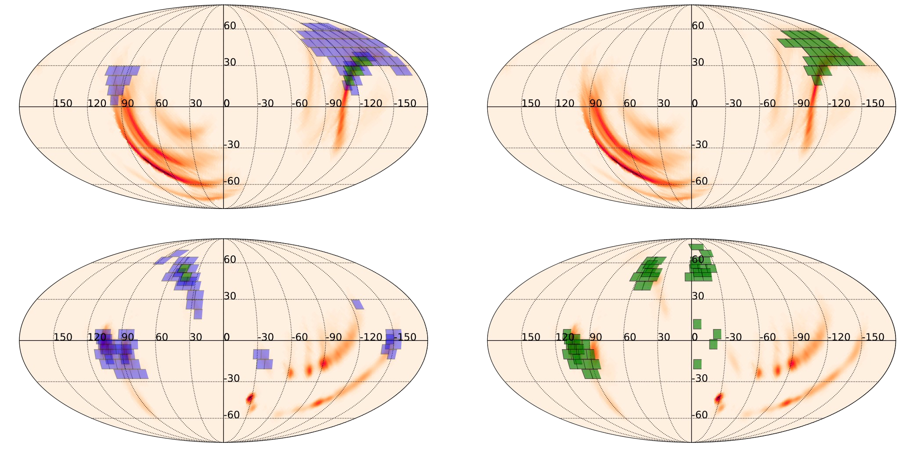

My Research
Multimessenger Astrophysics
Much of my research during my undergraduate years, working mostly with Prof. Michael Coughlin and within Prof. Mansi Kasliwal's group, revolved around investigating the merger of two neutron stars, or of one neutron star and one black hole. These events are expected to yield a variety of counterparts, including Gravitational Waves (GWs) and kilonovae. Kilonovae are optical/infrared counterparts powered primarily by radioactive decay. They have been found to be one of the dominant sources of heavy elements in the Universe; in other words, our gold and platinum jewelry was likely forged from the remnants of these cosmic explosions!
1. Optimizing Observations of Kilonovae
- SUPER-SCHEDULING
-
Kilonovae are fast-fading transients, meaning we have to be at the top of our game when trying to detect them. One viable way is through GW Follow-up. The global network of GW detectors (LIGO, Virgo, and KAGRA) detect a GW and release a localization of the source that can be very coarse -- up to thousands of square degrees. We have to try and cover this area with our telescopes as optimally as possible. One of my contributions to these efforts was an algorithm that allows past observations to be taken into account during integrated scheduling of telescope observations. This is useful for when some observations fail due such circumstances as bad weather conditions.

- FILTER BALANCING
-
This algorithm, adaptable to large, multi-lobed GW localizations, was urgently needed by the Zwicky Transient Facility (ZTF), as GWEMOPT was having issues re-scheduling visits in more than one filter, thus losing out on important color information for transient classification. The solution was two-fold: in the case of smaller localizations, I optimized the number of tiles to be scheduled; for larger maps that are very spread-out in Right Ascension (RA), I implemented the ability to slice up the sky-map in terms of RA and schedule each slice separately.
 Fig 2. Skymap coverage with ZTF before and after the use of the appropriate filter balancing features. The top row shows scheduling of GW190425 without (on the left) and with (on the right) the filter balancing algo. The bottom row displays the same for S191213g. Fields represented in green have had all requested observations scheduled, while those in violet have not. - SURVEY OPTIMIZATION
-
The second method of detecting kilonovae is to do so serendipitously. During regular survey operation, we try and optimize the cadence and exposure time so that we have a better chance of discovering a kilonova unprompted by a GW detection. By simulating year-long observing plans and evaluating their efficiencies, I quantified the benefits of red, very high-cadence observations. I also found that strategizing for a survey is very different from triggered/follow-up searches, as you can usually benefit from longer exposure times during follow-up due to the limited search area. For surveys, however, exceeding past exposure times of 30 or 90 seconds was found to actually be detrimental.
2. Kilonova Theory and Parameter Inference
TOY MODELS
.
SUPER-FAST GRID INTERPOLATION
.
KILONOVA EJECTA GEOMETRIES
.